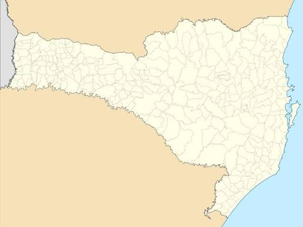

Acesso à justiça
Orientação e assistência jurídica gratuita, priorizando soluções consensuais e administrativas antes da judicialização, quando possível.
O Projeto Pro Bono UNIPLAC promove acesso à justiça e efetivação de direitos fundamentais, aproximando a universidade das comunidades da região serrana de Santa Catarina.
O Pro Bono UNIPLAC é uma iniciativa interdisciplinar voltada à promoção do acesso à justiça e à efetivação dos direitos fundamentais da população em situação de vulnerabilidade social da região de abrangência da UNIPLAC.
Orientação e assistência jurídica gratuita, priorizando soluções consensuais e administrativas antes da judicialização, quando possível.
Participação integrada de Direito, Serviço Social, Psicologia, Jornalismo, Design de Interiores e Administração.
Atendimentos em comunidades urbanas e rurais, em articulação com prefeituras, CRAS, associações e parceiros institucionais.
Fluxo resumido com base na metodologia descrita no projeto institucional.
Definição de município, comunidade e local, com articulação junto a parceiros.
O Serviço Social realiza a triagem inicial, identifica aspectos socioeconômicos e organiza os atendimentos.
Acadêmicos e advogados bolsistas realizam atendimento individualizado sob supervisão de professores do Direito.
Os casos podem ser analisados por banca composta por profissionais da área jurídica.
Quando cabível: orientação conclusiva, requerimento administrativo, solução extrajudicial ou encaminhamento ao EMAJ.
Nos casos autorizados, pode haver acompanhamento jurídico. Para quem não consegue se deslocar, há previsão de videoconferência.
O projeto é destinado à população em situação de vulnerabilidade social dos municípios da região de abrangência da UNIPLAC, especialmente pessoas hipossuficientes com dificuldades de acesso aos serviços jurídicos.
O projeto também envolve alunos voluntários e bolsistas, que desenvolvem competências técnicas, éticas e humanísticas por meio da prática extensionista.
Mapa do estado com os pontos do projeto. Clique em um marcador ou em uma cidade na lista para destacar a ação.

Período previsto: 08/08/2026 a 28/11/2026.
| Data | Cidade | Local | Situação |
|---|
O projeto reúne professores, bolsistas, acadêmicos, profissionais e parceiros institucionais.
Professora Mestre Aline Elise Debiazi Vargas Longo
Professora Mestre Camila Stefanes Oselame
Professor Mestre Gerson Palma Arruda
Direito • Serviço Social • Psicologia • Jornalismo • Design de Interiores • Administração
Também participam professores, advogados bolsistas, egressos, acadêmicos, técnicos administrativos e parceiros institucionais.
O projeto prevê cooperação com instituições públicas estratégicas. O documento institucional registra apoio do Tribunal de Justiça de Santa Catarina, por meio do Termo de Cooperação nº 56/2024 com a UNIPLAC.
O formulário abaixo é uma demonstração da área pública. Na versão publicada, ele deverá ser conectado a um sistema seguro de recebimento e triagem.